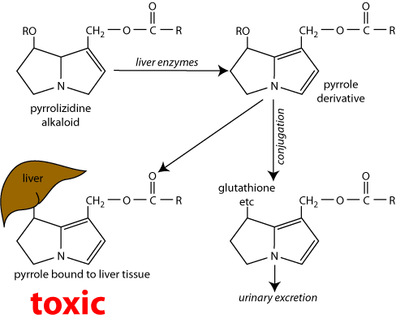

Pyrrolizidine alkaloids are present in a wide variety of plants which grazing animals might eat. They usually cause chronic liver damage, which may or may not be clinically evident.
Throughout the world, there is a large number of plants containing pyrrolizidine alkaloids which are potentially dangerous to grazing animals. In New Zealand, the two main species containing pyrrolizidine alkaloids are ragwort (Senecio jacobaea) and Paterson’s curse (Echium plantagineum). Many related plants such as viper's bugloss (E. vulgare), borage (Borago officinalis) and comfrey (Symphytum spp. & hybrids) are commonly grown in gardens or naturalised. Comfrey is often used as a herbal medicine and can poison people unless the alkaloids are removed: there is also the possibility that people may give it to companion animals. However there are no reports of poisoning by members of these spp. in animals in New Zealand so that pyrrolizidinosis in local terms means seneciosis or ragwort poisoning. Other members of the Senecio family that are found in New Zealand and may be toxic to livestock include German ivy (Senecio mikanoides) which has been associated with cattle poisoning in Taranaki and groundsel (Senecio vulgaris) which has caused the death of calves in North America.
In Australia there is a much wider range of plants which can produce pyrrolizidinosis; these include several species of Senecio and the toxic boraginaceous plants, the latter being by far the most important pyrrolizidine alkaloid containing species in that country. In addition the Crotalaria spp. which are found in the tropical and sub tropical parts of Australia are responsible for “walkabout disease” or “Kimberley horse disease”. This is an hepatogenous encephalopathy caused by persistently elevated blood ammonia concentrations, due to hepatic insufficiency. Heliotropium europaeum is also an important cause of stock loss in Australia, being associated with “toxaemic jaundice” or chronic copper poisoning of sheep and occasional mortalities in cattle. It has also caused losses in poultry, which were fed wheat contaminated with its seeds. It occurs rarely in NZ, but has not been reported to cause problems.
Jacobine
More than 100 pyrrolizidine alkaloids have been identified, at least 27 of them are known to be toxic. The alkaloids of ragwort are jacobine, jaconine, jacoline, jacozine, senecionine and seneciphylline; jacobine is the major alkaloid.
The diseases caused are usually chronic, but in circumstances in which plant material high in the alkaloids is consumed, acute toxicity may occur e.g. C. spectabilis seeds in pyrrolizidinosis of chickens; (not seen in NZ). An important aspect of the intoxication is that the injury caused to the animals by ingestion of the alkaloids is cumulative. In fact an animal may need several seasons grazing of the toxic plant (e.g. ragwort) before overt disease will appear. Plants containing pyrrolizidine alkaloids are toxic even after drying.
The alkaloids exert their toxic effects in cells and tissues causing either necrosis, inhibition of mitosis or vascular damage. The compounds also require biotransformation, mainly in the liver, for toxicity to become apparent.
Pyrrolizidine alkaloids exist in the plant as a nontoxic free base or as N oxide. The N oxide must first be converted to a free base, presumably in the rumen, before conversion to the pyrrole. It has been shown that the alkaloid ester must remain unhydrolysed if metabolism to reactive pyrrols is to take place. Toxicity occurs when the free base is converted into highly reactive alkylating pyrroles by liver microsomal enzymes.
Ester hydrolysis in the liver is important in alkaloid detoxification and therefore, factors that can modify the activity of the esterases capable of breaking them down, may control the toxicity of the alkaloids. Other structural features of the amino alcohol, as well as the presence of other substitutions on the rings, also modify the rate and extent of the hydrolysis to reactive pyrrols and therefore the toxicity of the compounds. Animals with high liver glutathione levels are less susceptible to intoxication by a dose of alkaloid than those in which the levels of this compound are low.
An important characteristic of many pyrrolizidine alkaloids is their antimitotic action, manifested by the appearance in the liver of giant hepatocytes. In the liver the reactive pyrrole crosslinks with DNA and prevents liver cells from reproducing. As the cells senesce and die a cirrhosis like condition results. The changes lead to liver failure and death. Alkaloids that are found to cause this effect most consistently are those which are metabolised to compounds which can behave as bifunctional alkylating agents. Some reactive pyrrolic metabolites are probably sufficiently stable following formation in the liver cells to escape from these cells and to reach the lung and damage the capillaries there, resulting in acute pulmonary oedema and hydrothorax.
It is possible also that reactive pyrrol formation can take place in the lung and the kidney independently of the liver and be responsible for cell injury in these tissues.
Pyrrolizidinosis (seneciosis) of cattle has been reported in NZ for over a century. In some instances several animals are affected but frequently only an individual may be poisoned. Affected cattle usually develop an indefinite illthrift with loss of condition. Milk production decreases and occasionally diarrhoea with tenesmus develops. In extreme cases rectal prolapse occurs. Nervous signs may be seen including depression, ataxia and irritability that may extend over several weeks, before animals become recumbent and die.
Toxicosis as a result of eating feed containing pyrrolizidine alkaloids is common in sheep in Australia. In New Zealand, seneciosis in sheep is less common than in cattle and invariably causes chronic hepatocyte damage with enhanced uptake of copper leading to chronic copper poisoning. Sheep enzymatically detoxify the ragwort alkaloids in the rumen to some extent, (no such activity occurs in cattle) and while growing sheep are susceptible to chronic ragwort poisoning, they are less so than cattle. For this reason, sheep are frequently used to control and reduce ragwort stands.
Horses
Seneciosis is now less common in horses in NZ. In earlier days it was a common disease of grazing horses. Affected horses show dullness, unsteadiness, aimless wandering and eat their food slowly and deliberately. They frequently pass dark urine and show signs of jaundice. However in a recent case four horses died from ragwort poisoning, all showing signs of photosensitisation with severe chronic fibrosing hepatopathy.
Pathological findings include ascites with oedema of the mesentery and associated intestinal and gall bladder walls and a small fibrotic liver. Jaundice may or may not be present and there are usually diffuse subendocardial haemorrhages. Histopathological changes in the liver usually include atrophy of the liver parenchyma, with zonal or diffuse megalocytosis of the hepatocytes; biliary duct hyperplasia with associated postal tract fibrosis, and perivascular fibrosis, affecting central veins.
The changes seen in sheep and horses are essentially similar to those of cattle.
Clinical signs, presence of the plant in pasture and liver function tests.
Nervous signs: encephalomyelitis or malacia. Poisoning by lead or a wide variety of other plants.
None.
Ragwort should be sprayed or topped before flowering, and cattle kept off the pasture until the plants have died. Avoid making hay or silage from ragwort infested pasture.
Poor.
Connor, H.E. (1977). The Poisonous Plants in New Zealand. E.C. Keating, Government Printer, Wellington, New Zealand.
Dewes, H.F. and Lowe, M.D. (1985). Haemolytic crisis associated with ragwort poisoning and rail chewing in two thoroughbred fillies. N Z vet J. 33: 159 160.
Elcock, L. and Oehme, F.W. Senecio poisoning in Horses: A Summary. Vet Hum Toxicol. 24:122 123.
Hill F. (1998). Plant poisonings in cattle. Vetscript XI. 9:14 15.
Johnson, A.E. Molyneux R.J. and Ralphs, M.H. (1989). Senecio: A Dangerous Plant for Man and Beast. Rangelands. 11(6).
Segall H.J. (1978) Pyrrolizidine alkaloids derived from Senecio jacobaea. Toxicology Letters, 1, (5-6), 279-284
Seawright, A.A. (1982). Animal Health in Australia. Vol. 2. Chemical and Plant Poisons. Australian Bureau of Animal Health, Canberra, Australia.
Surveillance (1974) 1(5):24 Ragwort poisoning in Otago and Southland (Cattle and Sheep)
Surveillance (1976) 3(1):18 Ponies, summer camps and Ragwort poisoning.
Surveillance (1980) 7(1):15 Ragwort poisoning (sheep, deer, cattle)
Surveillance (1981) 8(3):20 Ragwort poisoning in deer.
Surveillance (1981) 8(3):26 Ragwort poisoning in horses.
Surveillance (1983) 10(1):26 Ragwort poisoning in deer.
Surveillance (1983) 10(4):15 Ragwort poisoning (cattle).
Surveillance (1992) 19(1): 4 Ragwort poisoning in cattle.
Surveillance (1993) 20(3) 28 Ragwort poisoning in calves.
Surveillance (1994) 21(3) 31 Ragwort poisoning in sheep.
Surveillance (1996) 23(2): 4 Ragwort poisoning in horses.
Surveillance (1996) 23(4): 3 Ragwort poisoning in cattle.
Surveillance (2002) 29(2): 30 Ragwort poisoning in cattle.